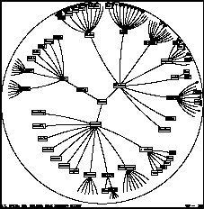

|
John Lamping and Ramana Rao
Hierarchy Display, Information Visualization, Fisheye Display, Focus+Context Technique.
The amount of information that can coherently be displayed on the screen of an interactive computer system can dramatically affect the ease of interacting with a large information structure. We demonstrate the Hyperbolic Browser technique for displaying and manipulating large hierarchies and graphs which have been converted to trees (e.g. by a bread-first walk and insertion of ``revisited'' nodes) [1,2]. For example, it is well suited for browsing organization charts, file system hierarchies, and the link structure of WWW servers and spaces. We have implemented versions of the hyperbolic browser in Common Lisp, C++, and Java and applied it to Web Space visualization as a client executable, a server-based cgi image-map-generating extension, and a Java applet.
The hyperbolic browser (Figure 1) provides a smoothly-varying focus+context or fisheye view. The display space allocated to a node falls off continuously with distance from the focus. The context always includes several generations of parents, siblings, and children, making it easy for the user to explore the hierarchy without getting lost. The tree is initially displayed with its root at the center, but the display can be smoothly transformed to bring other nodes into focus (see Figure 2). We have developed effective procedures for manipulating the focus using selection as well as pointer dragging, and for smoothly animating transitions across such manipulation.
This technique compares favorably with conventional hierarchy displays and other novel techniques [1]. In a 600 pixel by 600 pixel window, a conventional 2-d browser can typically display 100 nodes (w/ 3 character text strings). The hyperbolic browser can display 1000 nodes of which about the 50 nearest the focus can show from 3 to dozens of characters of text. Thus the hyperbolic browser can display up to 10 times as many nodes and provide more effective navigation around the hierarchy.
 Full Size Image
Figure 1: An organization chart displayed by uniformly embedding
the tree on a hyperbolic plane and using the Poincaré mapping of the plane
onto a disk.
Figure 2: The user has clicked on the blackened node
which brings that node to the center in an animated transition, exposing more
of its descendant structure.
We lay out the hierarchy on the hyperbolic plane, and then map this mathematical construct onto a circular display region. The hyperbolic plane is a non-Euclidian geometry where parallel lines diverge from one another. Thus, the circumference of a circle grows exponentially with its radius, which means that exponentially more space is available with increasing distance. Thus hierarchies---which tend to expand exponentially with depth---can be laid out uniformly in hyperbolic space, so the distance between parents, children, and siblings is roughly the same across the hierarchy.
We use a recursive algorithm that lays out each node based on local information. A node is allocated a wedge of the hyperbolic plane, angling out from itself, to put its descendants in. It places all its children along an arc in that wedge, at an equal distance from itself, and far enough out so that the children are some minimum distance apart from each other. Each of the children then gets a sub-wedge for its descendants. Because of the divergence of parallel lines, each child typically gets a wedge spanning about as big an angle as does its parent's.
The hyperbolic plane can be mapped onto the Euclidean unit disk, which provides a means for displaying it on a display. The two canonical ways of mapping the hyperbolic plane to the unit disk, the Klein model (projective) and the Poincaré model (conformal), map a vicinity in the hyperbolic plane to a focus at the center of the disk while the rest of the hyperbolic plane fades off perspective-like toward the edge of the disk. The Poincaré model (used in the figures) works better for visualizing hierarchies, because it preserves the fan-out shapes at nodes and uses the screen real-estate more efficiently.
A change of focus is implemented as a geometric translation of the structure on the hyperbolic plane. The user can change focus either by clicking on any visible point to bring it into focus at the center, or by dragging any visible point to any other position (with immediate feedback). In either case, the rest of the display transforms appropriately. Regions that approach the center become magnified, while regions that were in the center shrink as they move toward the edge. Thus the user can browse the tree structure while maintaining the visual context. User understanding of a jump to a new focus is greatly improved if the transition is animated. This is done by calculating an ``nth-root'' transformation, which applied n times will have the same effect as the original, and using this transformation successively to generate intermediate frames, as illustrated with an n of 3 in Figure 2.
Doing successive translations in the hyperbolic plane will, in general, cause rotations, which are disorienting. To avoid this, a rotation component is added to translations so that the node in focus on the display will have a canonical orientation. The canonical orientation that we have found most effective is to have the parent of the focus node be in a canonical direction.
Responsive display performance is crucial for supporting interactive dragging and for supporting animated transitions on jump changes. This can be a problem for large hierarchies. We achieve rapid redisplay by compromising on display quality during animation and interactive dragging. Fortunately, the rendering compromises don't affect the coherence of the motion and are often unnoticed at animation speeds. Two effective compromises are to draw less of the fringe and to draw lines, rather than arcs. Other compromises including dropping text during animation, may destroy coherence of motion.
Hyperbolic geometry provides an elegant solution to the problem of providing a focus+context display for large hierarchies. The hyperbolic plane has the room to lay out large hierarchies uniformly, and the Poincaré map provides a natural, continuously graded, focus+context mapping from the hyperbolic plane to a display. The hyperbolic browser supports interaction with larger hierarchies than conventional browsers with modest computational requirements.
Visualizing Large Trees Using the Hyperbolic Browser
This document was generated using the LaTeX2HTML translator Version 95 (Thu Jan 19 1995) Copyright © 1993, 1994, Nikos Drakos, Computer Based Learning Unit, University of Leeds.
The command line arguments were:
latex2html -split 0 hb-video.tex.
The translation was initiated by Ramana Rao on Wed Jan 10 16:37:14 PST 1996
The author information was missing because of the use of special
latex command that came with chi style file. Bold "Figure 2" label
was added in manually. Generated document was manually edited to
incorporate a better gif image for Figure 1 and to add pointers to
full size images for both figures.
{kind=link}